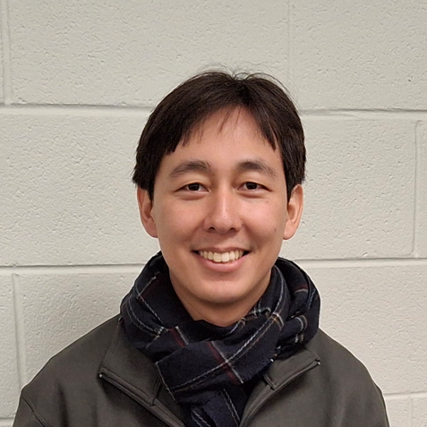
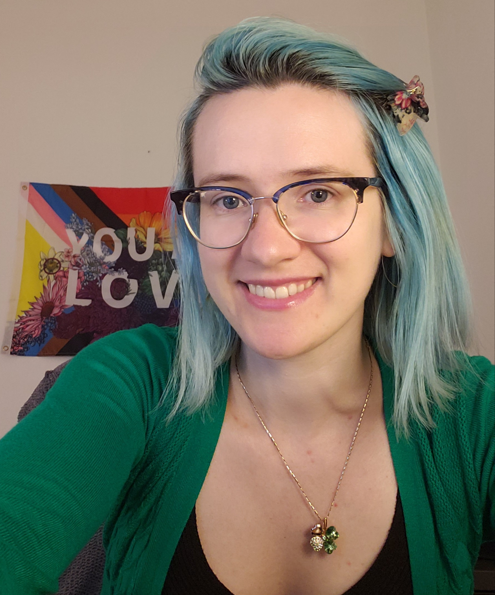
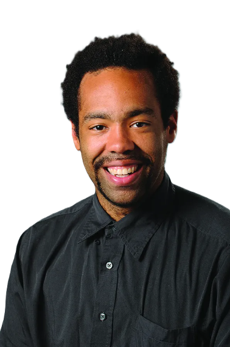

This is the Research in Graduate Mathematics Education Working Group Interest Form.
You can access our working group materials in this Google Drive folder.
Continuing the momentum from last year’s Research in Graduate Mathematics Education (RGME) working group session, we envision this year’s working group as a space for those interested in hearing about, discussing, or collaborating on RGME. Despite the importance of graduate education to the field of mathematics and mathematics education, there has been minimal research on graduate mathematics education, especially compared to undergraduate mathematics education. Recently, however, there has been significant emerging interest in graduate mathematics education from both practitioners and researchers. Still, there are few formal research venues (or “homes”) for this work to occur in a sustained fashion. This working group is intended to fill this gap by providing space for interested stakeholders to convene and work collaboratively on research-based solutions to improving graduate mathematics education.
Last year’s session featured several conversations and talks about the state of RGME (ranging from conversations about graduate student identity formation and critical conversations about qualifying exams to what it means to have a “student-focused” graduate program). This year, we will continue these conversations with a focus on ethical considerations and questions that ought to guide RGME and orient our approaches to research. Along the way, we will consider ways to be responsive to calls that all research in graduate education ought to attend to issues of (in)equity and consider if/how questions of equity (and ethics more generally) must be taken up differently in the unique context of graduate mathematics education. Building on research in STEM graduate education, we will consider orienting questions such as: What does it mean to do ethical research in mathematics graduate education? and How can we develop ethical research collaborations with graduate students? When should we?
This working group features several activities including:
The working group is from 8AM to 12 NOON Eastern Time, and this is the breakdown of our time:
After a brief introduction to the working group, we have a panel of three researchers from the RGME community with diverse research specialities and interests. Below you can read about each of them!
 Park a fourth year PhD student at Virginia Tech. He is currently working on his dissertation on how students understand various features of complex analysis. His dissertation is part of a broad interest in rethinking aspects of complex analysis pedagogy.
 Kelsey Quaisley's (she/they) research aims to understand and elevate the experiences of instructors and students, as well as to develop and support newer instructors of mathematics at the tertiary, secondary, and primary levels. She specifically focuses on the preparation and support of mathematics graduate student instructors as engaging, equitable, and inclusive teachers. She further focuses on the preparation and support of newer mathematics teacher educators. For her dissertation, she engaged in a narrative inquiry of a mathematics graduate student instructor's experiences teaching prospective elementary teachers.
 Aris Winger is an associate professor of mathematics at Georgia Gwinnett College. His current work centers around creating spaces where marginalized groups feel a sense of belonging in mathematics and STEM. This mission has led him to co-authoring a book series Advocating for Students of Color in Mathematics and conducting numerous professional learning workshops and consulting around the United States, working with educators and administrators at all levels. These experiences compelled him to open a school, Hybridge Academy, a non-traditional accredited school in the greater Atlanta area serving marginalized middle and high school students, of which he is a Co-Founder and Co-Director. He currently serves as the Executive Director of the National Association of Mathematicians. He has a Bachelor's Degree in Mathematics from Howard University (1998), a Master's of Science in the Mathematical Sciences from Carnegie Mellon University (2000) and Doctorate of Philosophy in the Mathematical Sciences from Carnegie Mellon University (2005).